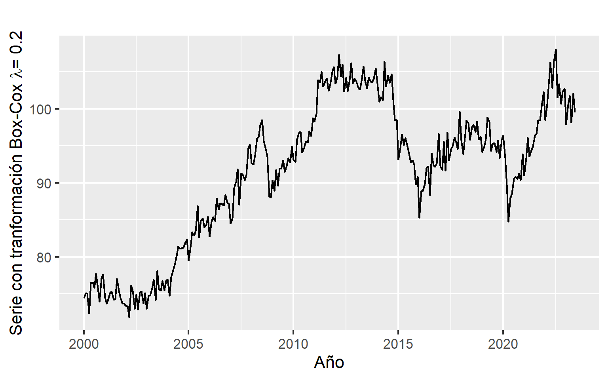
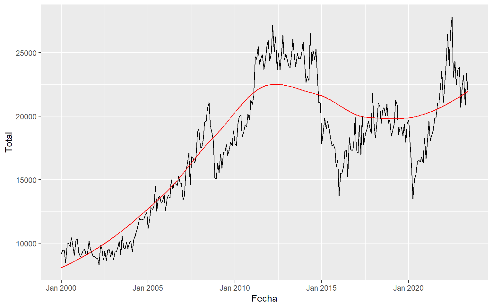
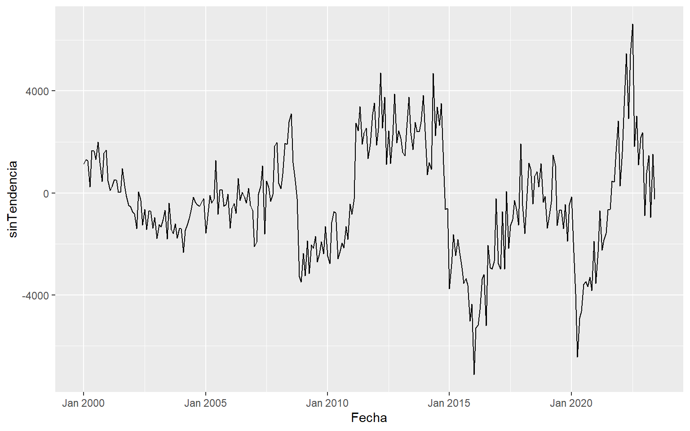
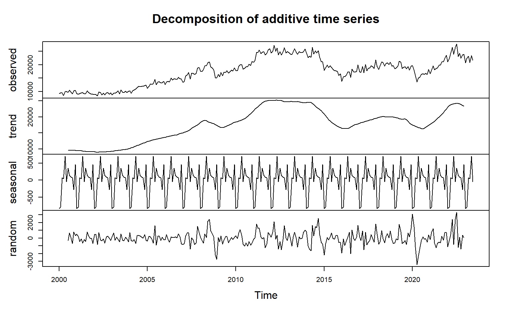
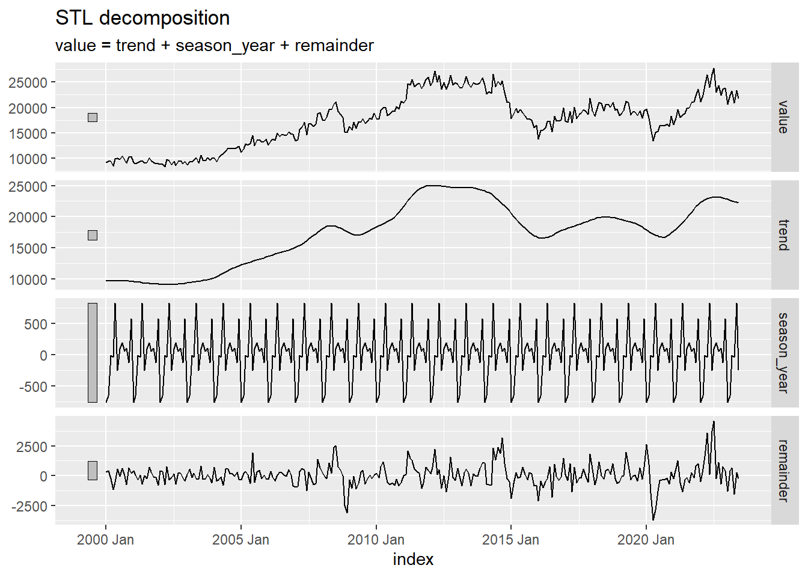
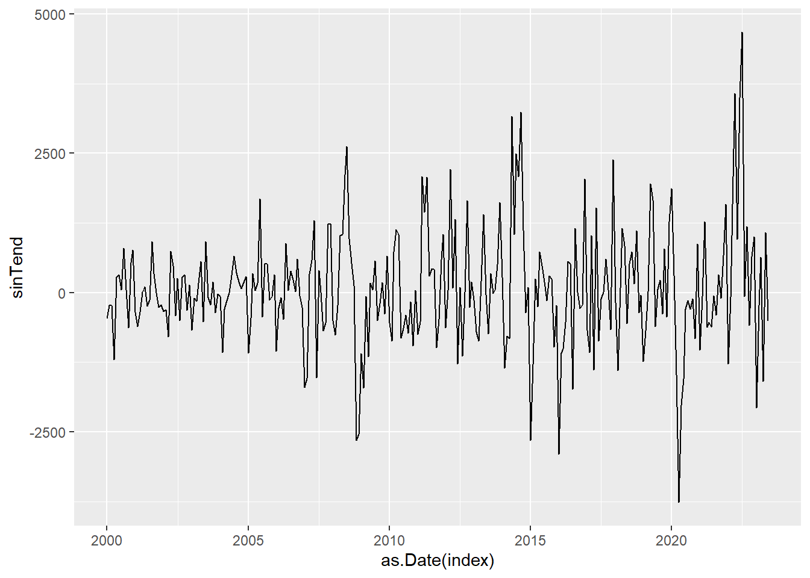
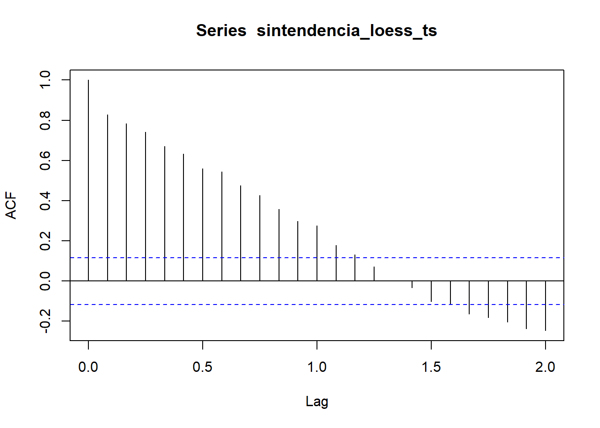
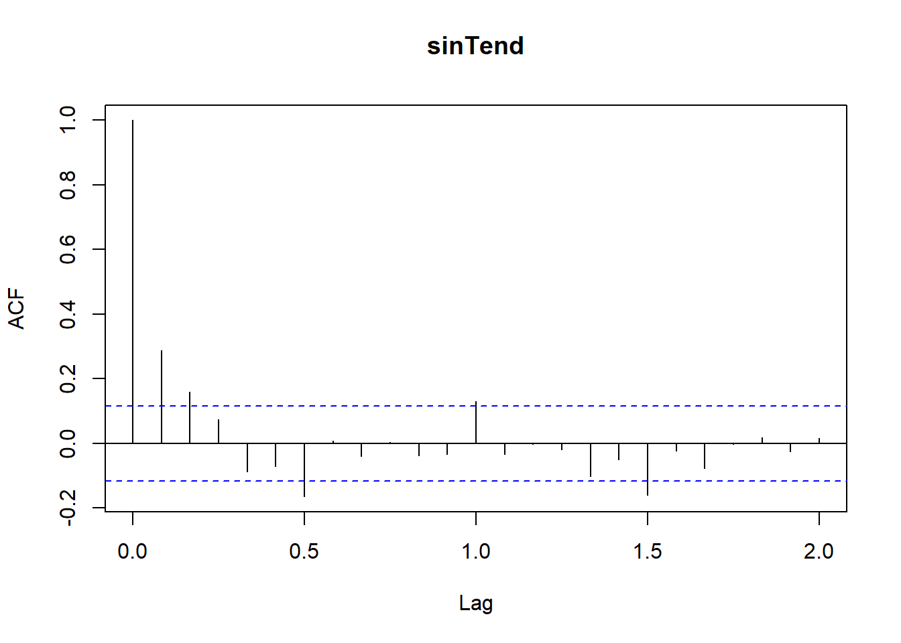
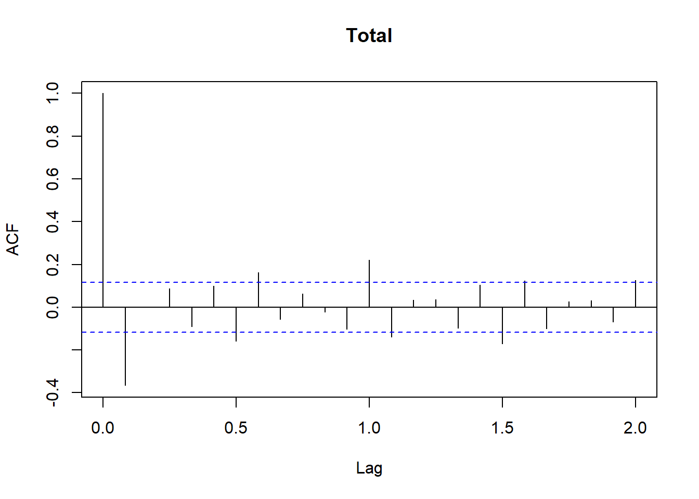

Esta serie de tiempo mide el total de las exportaciones colombianas mensualmente desde Enero del año 2000 hasta Junio del 2023. Los valores del total de exportaciones se miden en miles de dólares (FOB, Free onboard). Esta serie de tiempo incluye las exportaciones tradicionales (Café, Carbón, Petróleo y sus derivados, Ferroníquel) y las no tradicionales en conjunto.
1.1 Gráfico de la serie de tiempo
El gráfico de la serie de tiempo del total de exportaciones de colombia se muestra a continuación:
A simple vista, se puede evidenciar que:
La serie presenta tendencia, pues los valores de la serie no oscilan al rededor de un valor fijo. El dinero total proveniente de las exportaciones es cambiante a lo largo del tiempo observado.
La serie presenta varianza marginal no constante, pues en ciertos periodos de tiempo los cambios mes a mes son pequeños, mientras que en otros periodos de tiempo esos cambios son significativamente mucho más grandes.
No se ve claramente la existencia de una componente estacional.
1.2 Estabilización de la varianza
Dado que visualmente se observó que la serie presenta varianza marginal no constante, se usará la transformación de Box-Cox para obtener la serie estabilizada.
De esta manera se sugiere un valor de \(\lambda =\) 0.2. El gráfico obtenido de la serie estabilizada es el siguiente:

No se ve un cambio significativo respecto a la serie original. Además, la librería MASS sugiere un valor diferente de \(\lambda\), como se muestra a continuación:
Se procede a realizar la transformación de la serie usando \(\lambda =\) 0.6262626, obteniendo el siguiente gráfico para la serie estabilizada:
Aunque visualmente no se ven cambios importantes en cuanto a la estabilización de la varianza, al aplicar nuevamente la transformación de Box-Cox a la serie estabilizada, se obtiene el siguiente resultado:
Exactamente, se sugiere un valor de \(\lambda =\) 1.030303 \(\approx 1\). Se trabajará desde ahora con la serie estabilizada.
serie <- serie_estabilizada062
1.3 Análisis de tendencia
1.3.1 Ajuste de tendencia usando regresión LOESS
Total Fecha
1 9202.399 Jan 2000
2 9442.243 Feb 2000
3 9439.146 Mar 2000
4 8470.853 Apr 2000
5 9951.207 May 2000
6 9993.015 Jun 2000


1.3.2 Descomposición por filtro de promedios móviles

1.3.3 Descomposición STL


1.3.4 Diferencia
1.3.5 ACF de las series sin tendencia



1.4 Detección de la estacionalidad
A partir de la serie sin tendencia, después de haberla estimado por el método STL, se hace el gráfico de subseries (por meses) para ver si se evidencia la existencia de algún tipo de estacionalidad.
El gráfico de subseries muestra diferencias en las medias de varios meses. Especialmente los meses de enero y febrero, presentan una un valor medio más bajo que el resto de las meses en el total de las exportaciones.
Aquí no se ve muy claro un patrón en las subseries anuales, pero se ve que en la mayoría de estas, los meses de enero y febrero tienen generalmente un valor menor que en el resto de los meses, aunque no siempre es así. En general no se ve de forma claro algún patrón que se repita a lo largo del tiempo.
Los gráficos de dispersión de los retardos con el valor actual se presentan a continuación:
No se ve que exista una relación lineal con ninguno de los retardos, indicando posiblemente la no existencia de una componente estacional en la serie.
---title: "Análisis descriptivo de las series de tiempo"editor_options: chunk_output_type: consoleecho: falseoutput: falseresults: false---```{r}library(zoo)library(xts) library(TSstudio) library(lubridate) library(tidyverse) library(ggplot2) library(readxl)library(forecast)library(MASS)library(timetk)library(feasts)library(fable)``````{r}load(file ="_environment.RData") ```## ***Exportaciones***Esta serie de tiempo mide el total de las exportaciones colombianas mensualmente desde Enero del año 2000 hasta Junio del 2023. Los valores del total de exportaciones se miden en miles de dólares (FOB, Free onboard). Esta serie de tiempo incluye las exportaciones tradicionales (Café, Carbón, Petróleo y sus derivados, Ferroníquel) y las no tradicionales en conjunto.```{r}Exportaciones$Total <-round(Exportaciones$Total)Exportaciones$Mes <-as.yearmon(Exportaciones$Mes)``````{r}Exportaciones <- Exportaciones[97:378,]Exportaciones_ts <-ts(Exportaciones[,'Total'], frequency =12, start =c(2000,1), end =c(2023,6))```### Gráfico de la serie de tiempoEl gráfico de la serie de tiempo del total de exportaciones de colombia se muestra a continuación:```{r}serie_plot <-ts_plot(Exportaciones_ts,title ="Serie de tiempo del total de exportaciones\n desde enero del 2000 hasta junio de 2023",Ytitle ="Total de exportaciones (Miles de dólares)",Xtitle ="Año",line.mode ="lines",slider =TRUE,Xgrid =FALSE,Ygrid =TRUE, color ="black") ``````{r}#| output: trueserie_plot```A simple vista, se puede evidenciar que:- La serie presenta ***tendencia***, pues los valores de la serie no oscilan al rededor de un valor fijo. El dinero total proveniente de las exportaciones es cambiante a lo largo del tiempo observado.- La serie presenta ***varianza marginal no constante***, pues en ciertos periodos de tiempo los cambios mes a mes son pequeños, mientras que en otros periodos de tiempo esos cambios son significativamente mucho más grandes.- No se ve claramente la existencia de una ***componente estacional***.### Estabilización de la varianzaDado que visualmente se observó que la serie presenta varianza marginal no constante, se usará la transformación de ***Box-Cox*** para obtener la serie estabilizada.```{r}#| echo: true#| output: true(lambda <- forecast::BoxCox.lambda(Exportaciones_ts, method ="loglik", lower =-2, upper =3))```De esta manera se sugiere un valor de $\lambda =$ `r lambda`. El gráfico obtenido de la serie estabilizada es el siguiente:```{r}#| output: true#| fig-align: center#| fig-height: 5#| fig-width: 8serie_estabilizada02 <- Exportaciones_ts |>BoxCox(lambda =0.2)autoplot(serie_estabilizada02, lwd =0.8) +xlab('Año') +theme_grey(16) +ylab(expression(paste('Serie con tranformación Box-Cox ', lambda, '= 0.2'))) ```No se ve un cambio significativo respecto a la serie original. Además, la librería `MASS` sugiere un valor diferente de $\lambda$, como se muestra a continuación:```{r}#| echo: true#| output: true#| fig-align: center#| fig-height: 5#| fig-width: 8lambda_loglik <- MASS::boxcox(lm(Exportaciones_ts ~1),seq(-2, 3, length =100))``````{r}#| echo: true#| output: truemaximo <-which.max(lambda_loglik$y)(lambda_loglik <- lambda_loglik$x[maximo])```Se procede a realizar la transformación de la serie usando $\lambda =$ `r lambda_loglik`, obteniendo el siguiente gráfico para la serie estabilizada:```{r}#| output: true#| fig-align: center#| fig-height: 5#| fig-width: 8serie_estabilizada062 <- Exportaciones_ts |>BoxCox(lambda =0.6262626)autoplot(serie_estabilizada062, lwd =0.8) +xlab('Año') +theme_grey(15) +ylab(expression(paste('Serie con tranformación Box-Cox ', lambda, '= 0.6262626'))) ```Aunque visualmente no se ven cambios importantes en cuanto a la estabilización de la varianza, al aplicar nuevamente la transformación de ***Box-Cox*** a la serie estabilizada, se obtiene el siguiente resultado:```{r}#| echo: true#| output: true#| fig-align: center#| fig-height: 5#| fig-width: 8lambda_loglik <- MASS::boxcox(lm(serie_estabilizada062 ~1),seq(-2, 3, length =100)) ```El intervalo de confianza para $\lambda$ incluye al 1, indicando que ya no es necesario aplicar nuevamente una transformación.```{r}#| echo: true#| output: truemaximo <-which.max(lambda_loglik$y)(lambda_loglik <- lambda_loglik$x[maximo])```Exactamente, se sugiere un valor de $\lambda =$ `r lambda_loglik` $\approx 1$. Se trabajará desde ahora con la serie estabilizada.```{r}#| echo: trueserie <- serie_estabilizada062```### Análisis de tendencia#### Ajuste de tendencia usando regresión ***LOESS***```{r}#| output: trueserie_data_frame <-data.frame(Exportaciones = serie, Fecha = Exportaciones$Mes)head(serie_data_frame)serie_data_frame |>plot_time_series(.value = Total,.date_var = Fecha)``````{r}#| output: true#| fig-align: center#| fig-height: 5#| fig-width: 8serie_data_frame <- serie_data_frame |>mutate(ajus =smooth_vec(Total, span =0.75, degree =2)) serie_data_frame |>ggplot(aes(Fecha, Total)) +geom_line() +geom_line(aes(y = ajus), color ="red")serie_data_frame <- serie_data_frame |>mutate(sinTendencia = Total - ajus)sintendencia_loess <- serie_data_frame |>ggplot(aes(Fecha, sinTendencia)) +geom_line() sintendencia_loess```#### Descomposición por filtro de promedios móviles```{r}#| output: true#| fig-align: center#| fig-height: 5#| fig-width: 8## descomposición por filtro de promedio móvilesdescomposicion <-decompose(serie)plot(descomposicion)```#### Descomposición STL```{r}#| output: true#| fig-align: centerserie_tsibble <-as_tsibble(serie)stl <- serie_tsibble %>%model(STL(value ~trend() +season(window ="periodic"),robust =TRUE)) %>%components() %>%autoplot()stl``````{r}tendencia_stl <- stl$data[stl$data$.var =='trend',]serie_tsibble['tendencia_stl'] <- tendencia_stl$.valserie_tsibble <- serie_tsibble |>mutate(sinTend = value - tendencia_stl)sintendencia_stl <- serie_tsibble |>ggplot(aes(as.Date(index), sinTend)) +geom_line() ``````{r}#| output: true#| fig-align: centersintendencia_stl```#### Diferencia```{r}#| output: truedserie <-diff(serie)sintendencia_diff <-ts_plot(dserie, title ="Serie diferenciada")sintendencia_diff```#### ACF de las series sin tendencia```{r}#| output: true#| layout-ncol: 3sintendencia_loess_ts <-ts(serie_data_frame[,'sinTendencia'], frequency =12, start =c(2000,1), end =c(2023,6))sintendencia_stl_ts <-ts(serie_tsibble[,'sinTend'], frequency =12, start =c(2000,1), end =c(2023,6))acf(sintendencia_loess_ts)acf(sintendencia_stl_ts)acf(dserie)```### Detección de la estacionalidadA partir de la serie sin tendencia, después de haberla estimado por el método ***STL***, se hace el gráfico de subseries (por meses) para ver si se evidencia la existencia de algún tipo de estacionalidad.```{r}sinTend_stl <- serie_tsibble[,c(1,4)]names(sinTend_stl) <-c('Fecha', 'Valor') sinTend_stl |>gg_subseries(Valor, period=12)```El gráfico de subseries muestra diferencias en las medias de varios meses. Especialmente los meses de enero y febrero, presentan una un valor medio más bajo que el resto de las meses en el total de las exportaciones.```{r}ggseasonplot(as.ts(sinTend_stl), col =hcl.colors(23, palette ="Dark 3"))```Aquí no se ve muy claro un patrón en las subseries anuales, pero se ve que en la mayoría de estas, los meses de enero y febrero tienen generalmente un valor menor que en el resto de los meses, aunque no siempre es así. En general no se ve de forma claro algún patrón que se repita a lo largo del tiempo.Los gráficos de dispersión de los retardos con el valor actual se presentan a continuación:```{r}ts_lags(as.ts(sinTend_stl))```No se ve que exista una relación lineal con ninguno de los retardos, indicando posiblemente la no existencia de una componente estacional en la serie.### Periodograma```{r}spectrum(as.numeric(as.ts(sinTend_stl)), log='no')Periodograma <-spectrum(as.numeric(as.ts(sinTend_stl)),log='no')ubicacion <-which.max(Periodograma$spec)sprintf("El valor de la frecuencia donde se máximiza el periodograma para la serie es: %s",Periodograma$freq[ubicacion])sprintf("El periodo correspondiente es aproximadamente: %s",1/Periodograma$freq[ubicacion])```## ***Bitcoin***